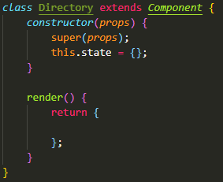
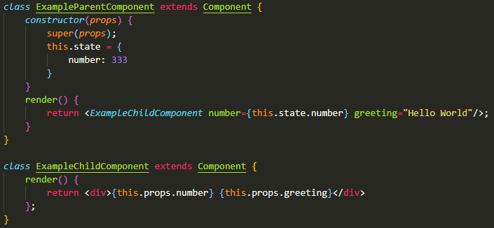

class Dragon { constructor(color, maxHP) { this.color = color this.maxHP = maxHP } }
const dragon1 = new Dragon(`red`, 2000)
object dragon1 {color: `red`, maxHP: 2000)
Class Methods
can use this keyword to refer to the properties of the object without having the object name
Class Inheritance
can create child classes based on parent classes
child class will inherit properties and methods of parent class but not vice versa
child class can add its own properties and methods without affecting the parent class
use extends keyword
Syntax
use JS class to create parent class
then for child class use class ChildName extends ParentName {}
Example
create parent Monster class and child Dragon class -> variables created with Dragon will have its own properties plus parent's, but variables created with Monster will only have its own properties
Super method
putting super in child class lets you use properties from the parent class
usually need to have this.color or this.type, but can use super(color, type)
Default Function Parameters
if set parameters and don't provide arguments, JS will set to default undefined
Example
function logSum(a = 0, b = 0) { console.log(a + b) }
logSum(2) will log 2 + 0 or 2
can also set defaults for constructor parameters in JS classes
constructor(color = `blue`, maxHP = `1000`)
Advanced Array Methods
possible to pass a function into another function as an argument
higher order function: function that takes another function as an argument or returns a function as a return value
ex. map, filter, reduce
callback function: function that's passed into a higher order function as an argument, then used/called back inside it
usually in the form of an arrow function
map, filter, and reduce
take callback functions as arguments
none are mutator methods, but are all iteration methods
all have return values
map and filter: return a new array
reduce: return a single value (not an array)
Map
iterates through an array and performs a given callback function on every item in the array
only works because roar() has return value of this
when writing own custom methods, must return value yourself
Intro to React
libraries: you call the library when you want to use it (ex. react, jquery)
frameworks: framework has control and calls your code when needed (ex. angular)
Defining features of React
declarative approach over imperative approach
declarative: declare what you want to see, then React updates DOM
imperative: manipulate the DOM directly yourself
component-based approach: groups UI into components
plays well with other technologies: only focuses on the UI and lets you decide the rest of the application architecture
Intro to JSX
syntactic extension to JS to help write front-end code faster
preprocessor language for JS (like Sass for CSS) that lets you write HTML in JS and it will be compiled into regular JS for the browser
instead of JS: document.createElement() or React: React.createElement()
can use React with JSX <div>Hello World!</div>
differences
className instead of class & htmlFor instead of for
if element has no content, can write it as a self-closing tag
ex. instead of <i className="fa fa-phone"></i> can use <i className="fa fa-phone">
can embed JS expressions using {}
Initial Configuration
add Reactstrap (for React based Bootstrap components) and Bootstrap (jquery and popper)
in React components: syntax looks like HTML/JSX tags (<>) that start with capital letter are components (ex. Navbar) and lower case ones are JSX elements (ex. className)
JS import and export
import and export keywords let files share data with each other (data can be objects, primitives, and functions (including classes)
2 kinds of exports: named- can have many in a file, default- can only have 1
default: export default App; import App from './App';
components: have </> and start with capital letter
can think of components like functions (repeatable blocks of code that need to be defined then called) for components, we define then render
defining react components
functional component: shorter and simpler compared to class components, but with different syntax and some differences
need to have capitalized name, accepts props as an argument, no constructor or render methods, can't use lifecycle methods or hold state (without hooks), and don't need this. for this.props
function Example(props) { return <div>{props.someData}</div>; }
class component: creating child class of parent Component (from React library)
class Example extends Component { render() { return <div>{this.props.someData}</div> } }
rendering components
render like an HTML tag with first letter capitalized and typically, but not always, self-closing (custom components)
ex. <Navbar></Navbar> OR <App />
why use components?
easily compose UI in modular way, like Bootstrap but can make own custom components or use 3rd party component libraries
basic structure of class component

if a class has local state, it must have a constructor
if a class has a constructor (optional), it must include props (short for properties) as an argument and use super(props) to inherit from parent class
components always return a single object (JSX element or another component)
to render an array of elements most efficiently, add a unique key attribute to the topmost element in each array item
key={this.id}
lifting state up: put state higher up in component hierarchy so multiple components have access to the same read only data (use prop from parent)
use React.fragment or empty <></> (not supported everywhere) instead of div when returning only 1 element to prevent an extra unnecessary DOM node
State and Props
components can have 2 kinds of data
state data: stored locally within the component itself (can be changed)
prop data: stored in a parent component and passed down (read-only)
to pass data out of a component, include the data as a custom attribute (ex.number) when rendering the component in another component
state: class components can define a this.state object in constructor method to hold data for the component to use or pass down to child components as props
should never be assigned anywhere except in constructor, if elsewhere, use this.setState method to change
props: objects in React used by components to receive data from parent components
can pass multiple props to render (ex.greeting)

Object Destructuring
shortcut for accessing properties inside objects or items inside arrays then assigning them as values of new variables
syntax
const {property1, property2} = someObject
function someFunction({property1, property2}) {}
example 1
const hotel = { id: 0, city: "Honolulu" }
instead of:
const id = hotel.id const city = hotel.city
can use:
const {id, city} = hotel
example 2
instead of:
function hotelInfo(hotel) { const id = hotel.id const city = hotel.city console.log(`${hotel.id} ${hotel.city}`) }
can use:
function hotelInfo({id, city}) { console.log(`${hotel.id} ${hotel.city}`) }
React Component Types
Presentational and Container Components
presentational: renders UI based on props passed to them (don't usually maintain their own state beyond some light UI state)
container: fetches and manages state data to pass to presentational components for rendering
React Router
React Virtual DOM
Browser DOM
the DOM is an API (application programming interface)- set of specifications for how programming languages and HTML interact with each other
maps HTML elements to a node-based, tree-like representation that programming languages can understand, traverse, and modify
when browser DOM is recreated, graphical view re-renders every time, so process can be "expensive"
Virtual DOM
React is 1 implementation of the virtual DOM technique
React maintains a lightweight representation of the browser DOM which is faster and easier to update plus doesn't re-render the graphical display
DOM changes are first made in the virtual DOM
reconciliation (engine: Fiber): finds differences between virtual and browser DOM then finds best way to change the browser DOM
the reason why we use setState to change the state rather than changing it directly
the reason we use key attributes on list elements: helps reconciliation process
React Router
can use React to built a Single Page App (SPA) which launches from a single HTML page instead of having multiple HTML pages
React Router- routing library that includes collection of router, route matching, and navigation components
handles routing requests to navigate to different views
generates unique, bookmarkable URL for each view
handles browser history (ability to move back and forward)
react router components
<BrowserRouter/> top-level parent component that wraps around all other React-Router components (uses HTML5 history API to control browser history)
<Route/> renders UI for a matching path (use the attribute exact to get an exact match
If just routing to component without passing state datea, use component={}
if need to pass state data as props to the component you're routing to, use render={}
<Redirect/> redirects to a new URL
<Switch/> groups <Route/> components together
works like switch from JS, will look through each case (route path) and if there is no match, then go to default (redirect)
<Link/> creates links to a path (use instead of <a>)
<Navlink/> version of <Link/> that adds styles to active link
Single Page Application (SPA)
multi-page website: code is re-rendered and new server request every time you go to a new page
SPA: front-end code is locally downloaded, when switching views app re-renders only changes and makes minimal server requests (ex. database data)
PROS: faster because less server requests, streamlined development, can reuse back end code for mobile app, easy to debug in browser
CONS: search engines can have trouble indexing, dependent on JS being enabled in browser, intial download can be slow, does not use traditional browser navigation (need React Router)
JS ES6 Computed Property Names, Spread Syntax, and Ternary Operator
computed property names: can pass in variables to use as property names when initializing an object (can create objects dynamically)